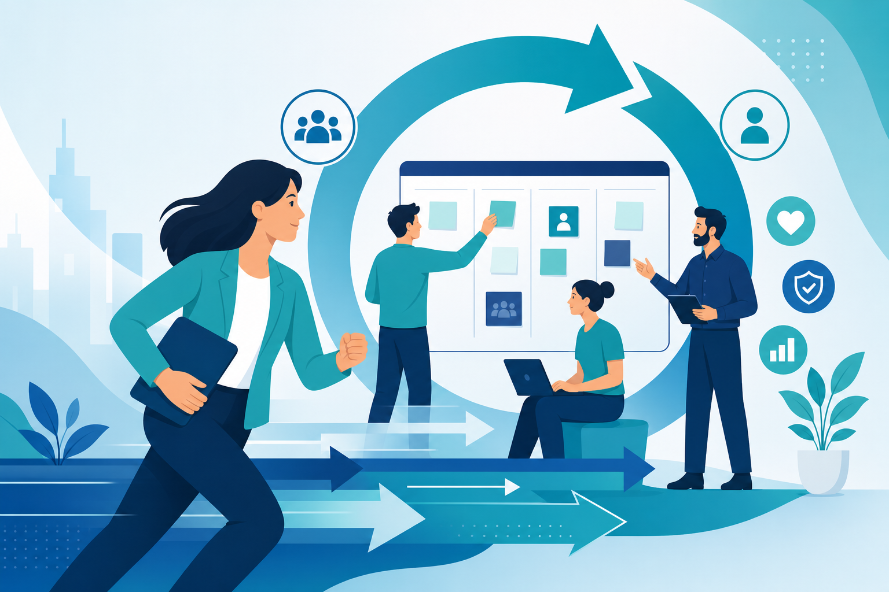
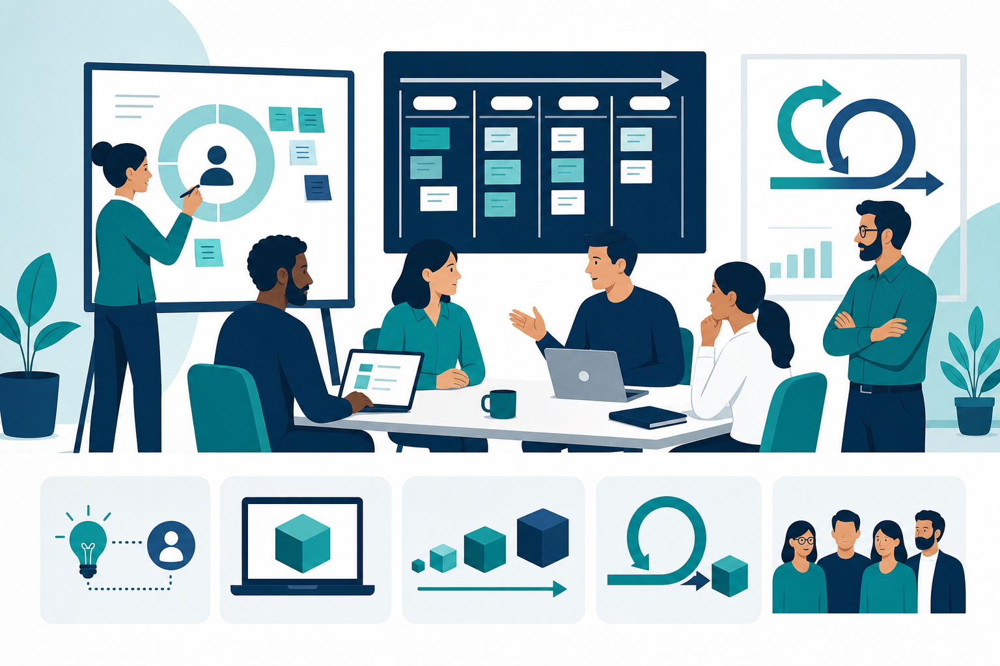
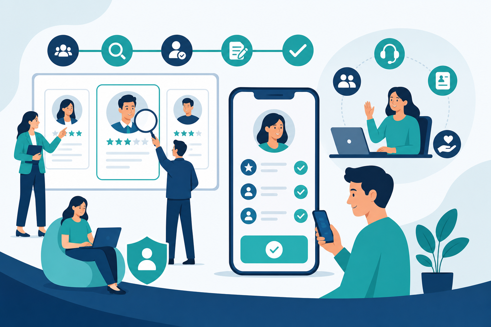
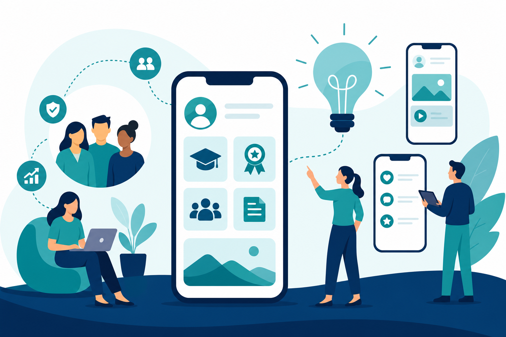

RH Ágil: como se adaptar rápido às mudanças
Com base na entrevista com Antônio Catharino (CHRO, Serasa Experian) no programa Gestão de Pessoas — Foursales. Aprenda mindset ágil, MVP, inovação e cases práticos de transformação do RH.
Ao concluir este conteúdo, você será capaz de:
- Compreender o que significa RH ágil — mindset de resposta rápida ao negócio.
- Diferenciar cultura ágil de metodologia aplicada de forma rígida.
- Aplicar conceitos de MVP, inception e entregas incrementais no RH.
- Identificar subsistemas de RH com maior ganho imediato (recrutamento, shared services).
- Relacionar inovação, usabilidade e protagonismo do RH diante de crises.
Para Antônio Catharino, ser ágil é criar uma organização inserida no contexto certo para adaptar-se às necessidades do negócio de forma rápida e eficiente.
O mundo é cada vez mais VUCA (volátil, incerto, complexo e ambíguo). A pandemia acelerou isso — trabalho remoto virou exemplo de resposta ágil em semanas.
| Princípio | Na prática |
|---|---|
| Velocidade | Respostas rápidas às demandas do negócio |
| Valor | Evitar projetos longos que chegam desatualizados |
| Mindset | Mudança de mentalidade — não só ferramentas |
| Integração | RH trabalha para dentro e para fora da organização |
Antônio tira a palavra "metodologia" da equação e coloca "cultura ágil" — ela pode entrar em qualquer lugar, inclusive na vida pessoal.
- Cultura de MVP — entregar o mínimo viável e evoluir
- Menos burocracia, mais simplicidade
- Melhoria contínua no "sangue" do time
- Permitir falhas sem "matar" o profissional inovador

Dentro e fora do RH
Na Serasa, times de tecnologia já operam em ágil. O RH aprendeu a replicar o modelo em processos de negócio — com inception (workshop de 2 dias para desenhar o processo ideal) e definição de MVP.
Case Oracle HCM — velocidade
Primeiro go-live de Oracle em 3 meses (antes, projetos similares levavam 1,5 ano). Decisão pragmática: manter salário anual no sistema em vez de atrasar o projeto por customização — adaptação em 1 semana.
- Times multifuncionais com autonomia para decidir
- Líder valida — não microgerencia cada detalhe
- Entrega fase 1 → correções na sprint seguinte
- Confiança no time é pré-requisito

Antônio aponta dois subsistemas com maior ganho imediato:
| Área | Por quê | Meta |
|---|---|---|
| Recrutamento | Guerra por talentos; experiência do candidato ponta a ponta | De 60 dias para ~1 semana (tech) |
| Shared Services | Processos transacionais lentos (admissão, férias, promoção) | Experiência mobile, "ordem natural" sem burocracia |

Inovação é cultura, não projeto pontual. Na Serasa, toda quinta-feira há reunião dedicada — parte operacional, parte inovação.
Front-end sobre back-end robusto
ERP (Oracle) como backend + front-end customizado para o usuário. Exemplo: abrir vaga de recrutamento em 1 minuto via formulário simples, enquanto o ATS roda por trás.
- Usabilidade = adesão à mudança de processo
- Front-end ágil permite ajustes em semanas, não meses
- Líderes de frente trazem tendências do mercado (1 slide, não 1h de pitch)
- Tecnologia serve a experiência — não o contrário
Resultados do Oracle HCM na Serasa
- Go-live em 3 meses com time multifuncional de alta autonomia
- Fase 1 rodando; fase 2 em andamento
- Comunicação intensa para a organização sentir a mudança cultural
- Priorizar o que vale a pena "brigar" — deixar o resto para sprints futuras
Protagonismo: fábrica em chamas (PepsiCo, 2008)
Antônio pediu tempo antes de demitir 600 pessoas após incêndio na fábrica. Montou squads multifuncionais, realocou talentos, treinou com Sebrae — entregou 200% de bônus no ano e ganhou prêmio internacional.
Entrevista completa com Antônio Catharino (CHRO, Serasa Experian) — programa Gestão de Pessoas #30, Foursales.
Você completou o Módulo 2
RH Ágil: adaptação rápida às mudanças
- Leitura dos módulos concluída
- Reflexão respondida
- Quiz aprovado (≥ 4/5)
- Vídeo assistido (opcional)